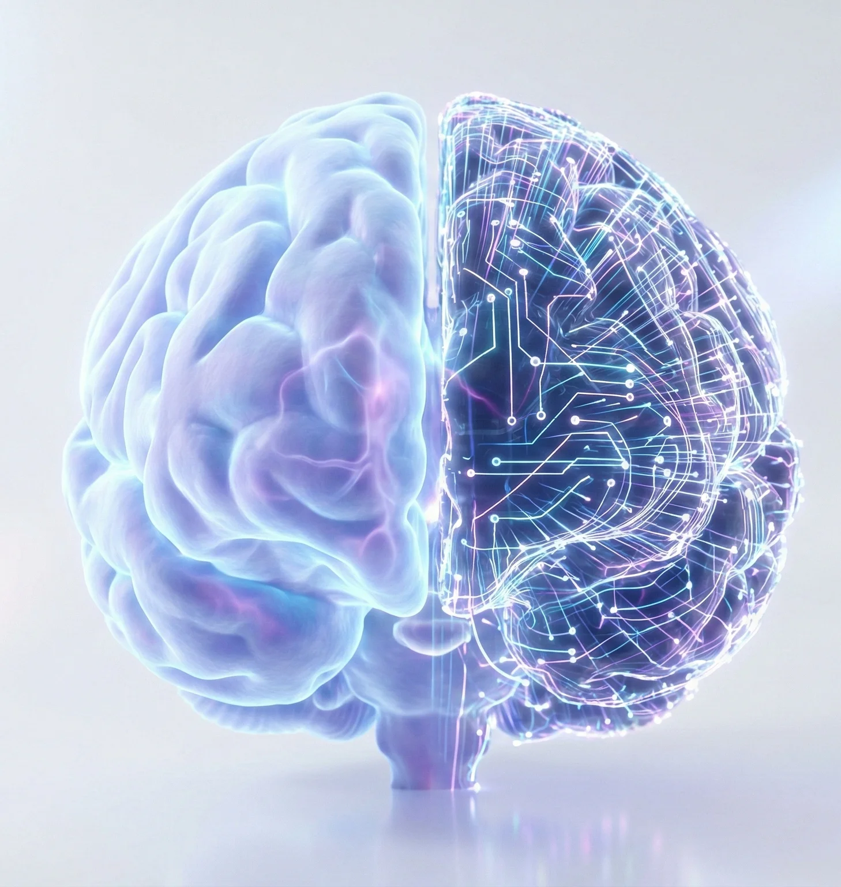
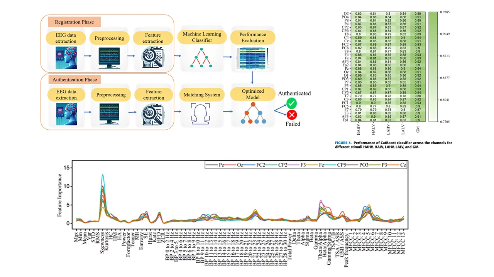
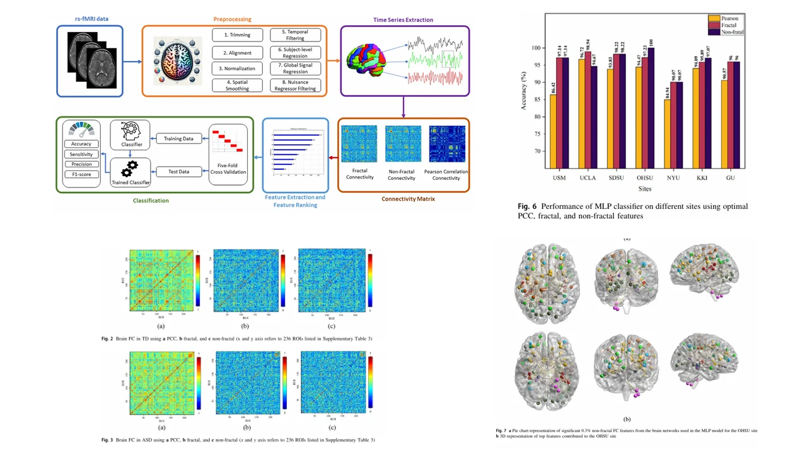
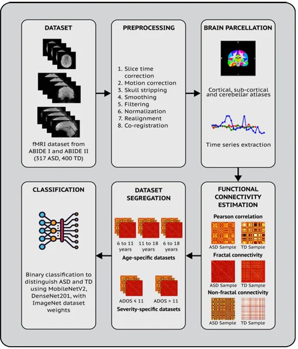

Specialized in EEG/fMRI signal analysis, time-frequency decomposition, and advanced preprocessing pipelines for neuroimaging data.
Building deep learning models including Transformers, Mamba state-space models, and CNNs for neural signal classification and prediction.
Developing diagnostic biomarkers for neurological conditions like ASD, translating research findings into clinically actionable tools.

EEG-based biometric authentication using emotional stimuli. Developing robust identity verification systems leveraging unique brainwave patterns during affective states.
Fractal functional connectivity analysis for Autism Spectrum Disorder diagnosis. Identifying neural complexity biomarkers through Hurst exponent and detrended fluctuation analysis.
Deep learning architectures for neuroimaging classification. Leveraging Mamba state-space models and Transformers for age/severity-specific ASD classification.

Chetan Rakshe, Ciby Thomas, Midhila Kalathe, Vanteemar S. Sreeraj, Ganesan Venkatasubramanian, Justin Thomas, Rajamanickam Yuvaraj, Dinesh Kumar, Jac Fredo Agastinose Ronickom
This study introduces a novel framework for EEG-based biometric authentication that addresses the challenge of inter-session noise (variability in brain signals over time). By utilizing "emotional logic" paradigms (specifically "disgust" and "grief" stimuli) and a specific channel selection strategy (Frontal-Parietal-Occipital), the system achieved a high authentication accuracy of 98.42% using a KNN classifier, significantly outperforming neutral-state baselines.
Read Paper
Chetan Rakshe, Vaibhav Jain, Rashmita Ratnaik, Manisha B. Ingle, Vanteemar S. Sreeraj, Ganesan Venkatasubramanian, Jac Fredo Agastinose Ronickom
This research develops a diagnostic pipeline for Autism Spectrum Disorder (ASD) by analyzing the "fractal nature" of brain connectivity. The study compared fractal functional connectivity (FFC) against traditional Pearson correlation (FC), finding that FFC provides a more robust biomarker. Using a Logistic Regression classifier on the ABIDE-I dataset, the model achieved a classification accuracy of 78.4% by focusing on the Default Mode Network (DMN) and limbic systems.
Read Paper
Vaibhav Jain, Chetan T. Rakshe, Rashmita Ratnaik, Vanteemar S. Sreeraj, Ganesan Venkatasubramanian, Jac Fredo Agastinose Ronickom
This paper investigates how age and symptom severity impact the accuracy of AI models in diagnosing ASD. The team developed a Deep Neural Network (DNN) that utilizes functional connectivity features from fMRI data. The study found that age-specific models (particularly for adolescents) significantly outperform "mixed-age" models, achieving up to 88.6% accuracy, demonstrating that personalized AI models are essential for heterogeneous disorders like autism.
Read PaperInternational Conference on Signal Processing and Communications (SPCOM)
IEEE International Conference on Biomedical Engineering
IEEE International Symposium on Medical Measurements and Applications
Indian Institute of Technology (BHU), Varanasi
Savitribai Phule Pune University